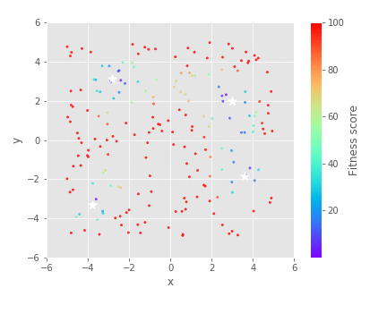

Visualising the behaviour of your genetic algorithm¶
You can visualise the behaviour of your genetic algorithm using animate. Here is a quick example where we use the genetic algorithm to fit Himmelblau's function (See here for more on Himmelblau's function).
sim = ga.ga(genes,
evaluate,
population_size = 200,
epoch = 50,
mutate_crossover = True,
speciate = True,
mutate = 0.4,
sigma = 0.5)
sim.run_simulation(seed = 1)
Default¶
You can see the progression of the population in the x and y genes with the default settings which will create x_y_animation.gif in your results folder.
anim = sim.results.animate('x', 'y')
{kind=link}
fmin and fmax¶
In the default animation, you can see that the colorbar goes up to a fitness score of 600, although a majority of the individuals have a fitness score below 200. You can use fmax and fmin to adjust the range of the colorbar.
anim = sim.results.animate('x', 'y', fmax = 100)
{kind=link}
Marking the optimum¶
You can mark a single optimum on the animation by passing in a list with an x and y coordinate. You can mark multiple optimums by passing in a list with a list of x and a list of corresponding y coordinates.
# single optimum (Left)
anim = sim.results.animate('x', 'y',
optimum = [3,2],
oc = 'w',
fmax = 100)
# multiple optimum (right)
anim = sim.results.animate('x', 'y',
optimum = [[3, -2.805118, -3.779310, 3.584428], [2, 3.131312, -3.283186, -1.848126]],
oc = 'w',
fmax = 100)
|  |
Inset¶
By default, an inset will be marked around the median individual of the final population. If there is a single optimum, this is where the population will have converged to.
anim = sim.results.animate('x', 'y',
optimum = [[3, -2.805118, -3.779310, 3.584428], [2, 3.131312, -3.283186, -1.848126]],
oc = 'w',
fmax = 100,
inset = True)
{kind=link}
You can also specify the bounds of the inset with inset = [xmin, xmax, ymin, ymax]
anim = sim.results.animate('x', 'y',
optimum = [[3, -2.805118, -3.779310, 3.584428], [2, 3.131312, -3.283186, -1.848126]],
oc = 'w',
fmax = 100,
inset = [-3.5, -2, 2.3, 3.8])
{kind=link}
Fitness on a logscale¶
You can put the fitness on a logscale by setting log_scale = True.
anim = sim.results.animate('x', 'y',
optimum = [[3, -2.805118, -3.779310, 3.584428], [2, 3.131312, -3.283186, -1.848126]],
oc = 'w',
inset = True,
log_scale = True,
fmin = 1)
{kind=link}
Warning
There is nothing to handle cases where the fitness is 0 and the log is undefined.
Transparency¶
Increasing the transparency can help you to visualise which areas your population spends the most time exploring.
anim = sim.results.animate('x', 'y',
optimum = [[3, -2.805118, -3.779310, 3.584428], [2, 3.131312, -3.283186, -1.848126]],
oc = 'w',
fmax = 100,
alpha = 0.05,
s = 10)
{kind=link}
{kind=link}